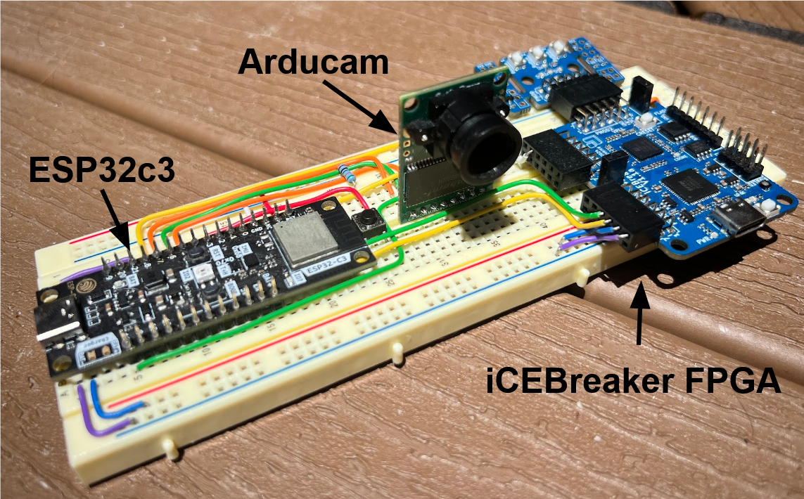
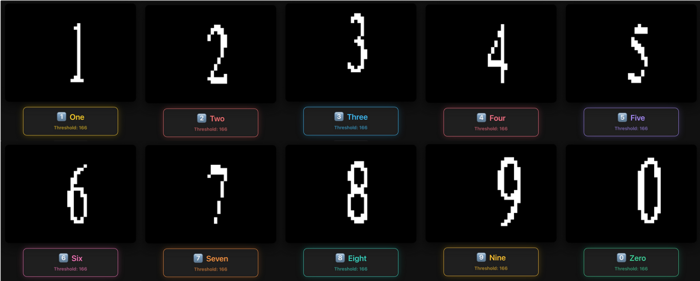

Chapter 8: System Deployment and Future Work


All work described thus far has been documented in the repository linked on the title page. Methods were recorded and automated for reproducibility in a commercial environment. Development resulted in robust firmware, scalable verified RTL, a cohesive Pytorch-Hardware landscape featuring a complete EDA pipeline, and an exhaustive design space exploration. Future work should focus on remote deployment via battery power, learning a wider zero region for ternary activations to improve quantized accuracy, and exploring if predictive functions scale across computer vision tasks and FPGA architectures.